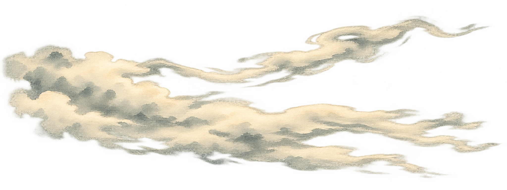
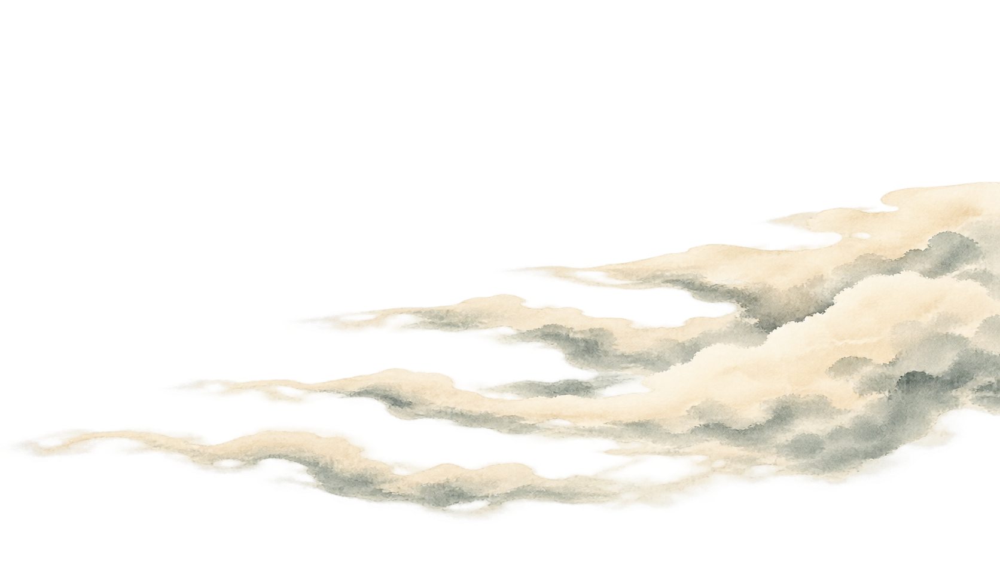
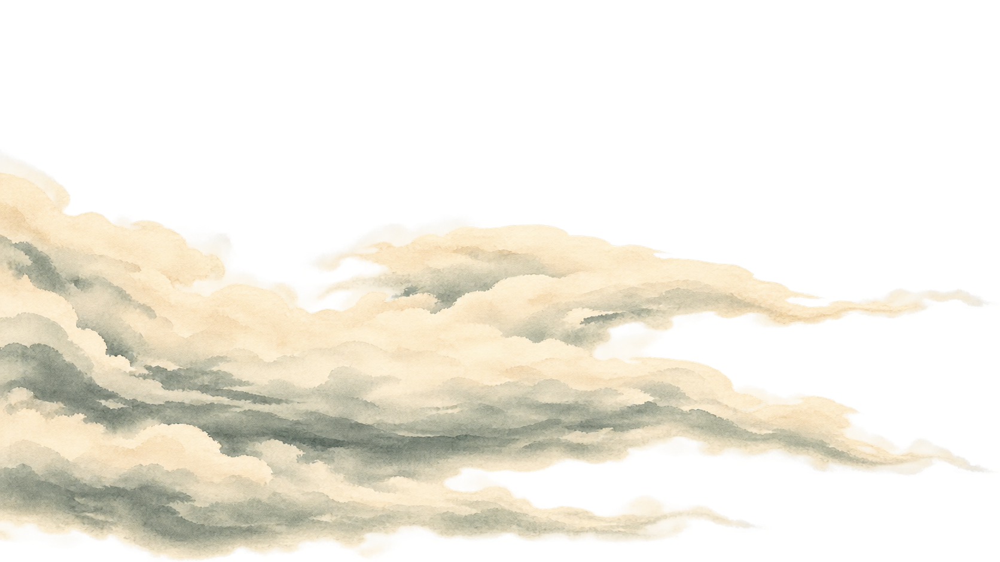
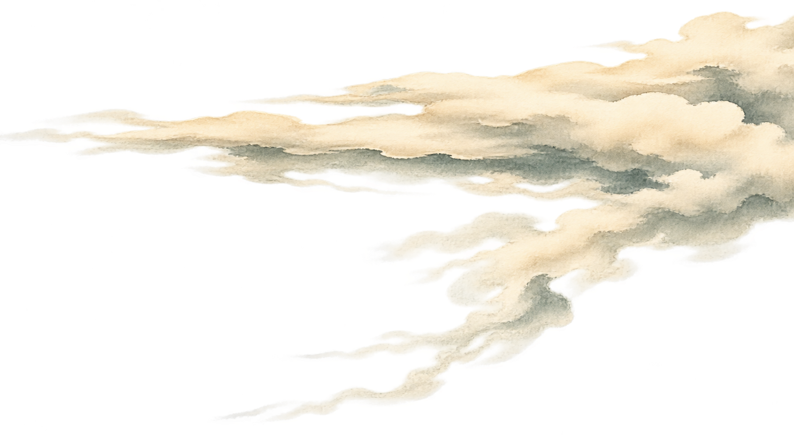

STILLWATER · CLOUD ARTWORK STUDIES · 01
River mist ribbons
Wetlands to village · Long horizontal shelves, split mist streamers and pale celadon-gray washes.






STATIC LAYERED STUDY · NEW PNG ARTWORKSix independently generated transparent layers. The checkerboard below is only a viewing aid.